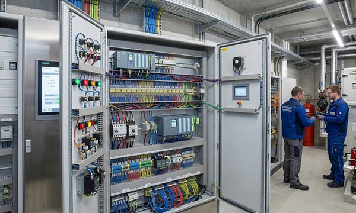

Electrical systems in control installations and building automation are at the heart of modern buildings and industrial facilities, ensuring efficient operation, energy savings, and reliable process management. In Germany, as well as in France, Italy, Switzerland, the United Kingdom, Norway, Austria, Poland, and the Benelux countries (Belgium, Netherlands, Luxembourg), control installations are widely used to manage lighting, heating, ventilation, air conditioning, security, and industrial machinery. Building automation integrates these systems into cohesive, intelligent networks, resulting in improved comfort, optimized energy consumption, and sustainable operations.
In industrial environments, control installations manage complex machinery and processes, ensuring precision, reducing operational errors, and preventing downtime. Across all these sectors, well-organized labeling, clear signage, engraved type plates, machine labels, cable markers, panel labels, safety decals, QR code labels, rating plates, industrial plates, asset tags, and CE marking plates are essential for both compliance and operational efficiency. SignXpert delivers durable, customizable labeling solutions across Germany and Europe, engineered for high performance, clarity, and long-term reliability.
Efficient Energy Optimization Through Building Automation.
Energy efficiency is a key priority in modern buildings and industrial facilities. Control installations allow automated management of lighting, heating, ventilation, and other systems, reducing energy consumption while maintaining comfort and productivity. Automation can adjust energy usage based on occupancy, time of day, or process requirements, ensuring optimal performance at all times.
In Germany, automated control systems are widely adopted in both commercial buildings and industrial plants, with France, Italy, Switzerland, and the UK advancing in smart building technologies, Norway focusing on energy-efficient solutions, Austria integrating automation in industrial facilities, Poland scaling automation across high-volume production sites, and the Benelux region providing logistics and smart infrastructure applications.
Durable and clearly labeled panels, cable markers, engraved labels, type plates, and QR code plates ensure that technicians can easily manage energy systems, monitor performance, and implement adjustments efficiently. SignXpert supports these applications with industrial-grade labeling that enhances energy optimization and reduces manual intervention, ensuring long-term sustainability and cost efficiency.
Safety and Reliability: Clear Labeling for Control Installations.
A safe and reliable control installation requires precision, organization, and clear labeling. Proper identification of cables, panels, components, and control devices minimizes the risk of incorrect connections, operational errors, and accidents. In emergency situations, quick and accurate access to labeled systems can prevent damage and reduce downtime.
Across Germany and Europe, labeling is essential for inspections, maintenance, and compliance with DIN, VDE, and EU safety standards. Engraved labels, machine identification plates, industrial plates, cable markers, and safety decals ensure that every component is easily identifiable, even in complex industrial or building automation environments.
SignXpert's industrial-grade labels and signage provide long-lasting clarity, making control systems easier to maintain, operate, and troubleshoot. Technicians and operators can work confidently, knowing that all systems are clearly marked and compliant with European regulations.
Flexibility and Scalability in Modern Control Systems.
Modern control installations and building automation systems are highly flexible and scalable, allowing adaptation to changing requirements or integration of new technologies. As buildings expand, production lines evolve, or operational demands increase, control systems can be updated without major rebuilds. Remote monitoring, centralized management, and automated control functions further enhance efficiency and reduce operational complexity.
Flexible labeling is essential to support these scalable systems. Clear and durable engraved labels, type plates, panel markers, cable markers, QR code labels, and industrial signage enable smooth integration of new equipment and seamless system upgrades. SignXpert provides solutions designed for long-term adaptability, ensuring that labels remain legible and functional as control and automation systems grow and evolve.
Why SignXpert is the Leading Provider of Labeling for Control and Building Automation.
SignXpert offers a complete range of high-quality signs and labeling specifically tailored for control installations and building automation in Germany and across Europe, including France, Italy, Switzerland, the United Kingdom, Norway, Austria, Poland, and the Benelux countries.
Our solutions include engraved type plates, machine labels, industrial plates, panel labels, cable markers, QR code plates, safety decals, rating plates, and CE marking plates, all designed to withstand industrial conditions, temperature fluctuations, and long-term use.
With fast delivery, including 24-hour turnaround for urgent orders, and a user-friendly online system, customers can easily customize labels to meet exact project requirements. SignXpert combines durability, clarity, regulatory compliance, and competitive pricing, providing reliable labeling solutions that streamline maintenance, improve safety, and ensure efficient operation throughout the lifecycle of control installations and building automation systems.
By choosing SignXpert, building operators, facility managers, and industrial technicians in Germany and across Europe gain access to high-performance, long-lasting signage and labeling solutions that enhance safety, efficiency, and sustainability in modern control and automation systems.